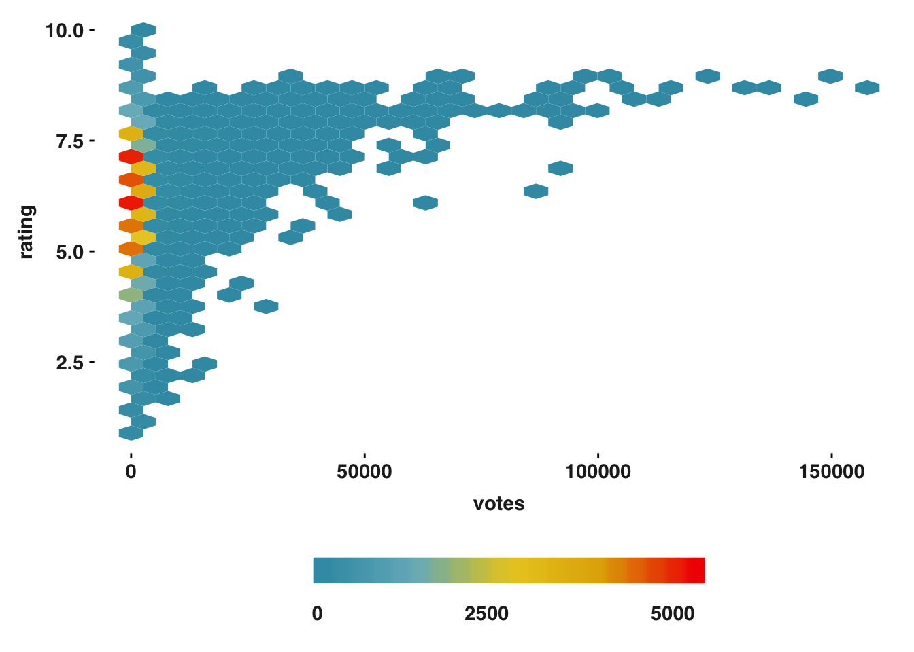

Page last updated: 04 May, 2019
Examples
Hexbin
##### Heatmap hexbin
ggplot(data = movies,
aes(x = votes, y = rating)) +
geom_hex() +
scale_fill_gradientn(colours = continuous_wes_pal,
breaks = c(0, 2500, 5000),
limits = c(0, 5000),
guide = "colourbar") +
guides(fill = guide_colourbar(barwidth = 15,
barheight = 1,
ticks = FALSE,
title = "",
label.hjust = 1)) +
my_theme()

LS0tCnRpdGxlOiAiSGV4YmluIHBsb3RzIgpvdXRwdXQ6CiAgaHRtbF9kb2N1bWVudDoKICAgIHRvYzogZmFsc2UKICAgIG51bWJlcl9zZWN0aW9uczogZmFsc2UKICAgIGRmX3ByaW50OiBwYWdlZAogICAgY29kZV9kb3dubG9hZDogdHJ1ZQogICAgaGlnaGxpZ2h0ZXI6IG51bGwKLS0tCgpgYGB7ciBzZXR1cCwgZXZhbD1UUlVFLCBpbmNsdWRlPUZBTFNFLCBlY2hvPUZBTFNFLCBlcnJvcj1GQUxTRSwgbWVzc2FnZT1GQUxTRSwgd2FybmluZz1GQUxTRSwgY2FjaGU9VFJVRSwgZmlnLmFsaWduPSdjZW50ZXInLCBjb21tZW50PSIifQpjaG9vc2VDUkFObWlycm9yKGdyYXBoaWNzPUZBTFNFLCBpbmQ9MTMzKQpzb3VyY2UoInNvdXJjZS9wbG90cy1vdmVydmlldy5SIikKYGBgCl9fXwoKUGFnZSBsYXN0IHVwZGF0ZWQ6IGByIGZvcm1hdChTeXMudGltZSgpLCAnJWQgJUIsICVZJylgCgpcICAKCiMgRXhhbXBsZXMgeyNoZXhiaW5zIC50YWJzZXR9CgojIyBIZXhiaW4geyNoZXhiaW59CmBgYHtyIGhleGJpbiwgZXZhbD1UUlVFLCBpbmNsdWRlPVRSVUUsIGVjaG89VFJVRSwgZXJyb3I9RkFMU0UsIG1lc3NhZ2U9RkFMU0UsIHdhcm5pbmc9RkFMU0UsIGNhY2hlPVRSVUUsIGZpZy5hbGlnbj0nY2VudGVyJywgY29tbWVudD0iIn0KIyMjIyMgSGVhdG1hcCBoZXhiaW4KZ2dwbG90KGRhdGEgPSBtb3ZpZXMsIAogICAgICAgYWVzKHggPSB2b3RlcywgeSA9IHJhdGluZykpICsKICBnZW9tX2hleCgpICsKICBzY2FsZV9maWxsX2dyYWRpZW50bihjb2xvdXJzID0gY29udGludW91c193ZXNfcGFsLCAKICAgICAgICAgICAgICAgICAgICAgIGJyZWFrcyA9IGMoMCwgMjUwMCwgNTAwMCksCiAgICAgICAgICAgICAgICAgICAgICBsaW1pdHMgPSBjKDAsIDUwMDApLAogICAgICAgICAgICAgICAgICAgICAgZ3VpZGUgPSAiY29sb3VyYmFyIikgKwogIGd1aWRlcyhmaWxsID0gZ3VpZGVfY29sb3VyYmFyKGJhcndpZHRoID0gMTUsIAogICAgICAgICAgICAgICAgICAgICAgICAgICAgICAgIGJhcmhlaWdodCA9IDEsCiAgICAgICAgICAgICAgICAgICAgICAgICAgICAgICAgdGlja3MgPSBGQUxTRSwKICAgICAgICAgICAgICAgICAgICAgICAgICAgICAgICB0aXRsZSA9ICIiLAogICAgICAgICAgICAgICAgICAgICAgICAgICAgICAgIGxhYmVsLmhqdXN0ID0gMSkpICsKICBteV90aGVtZSgpIApgYGA=